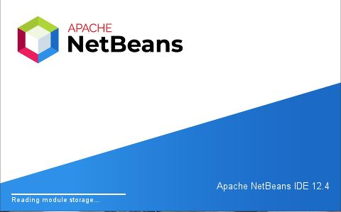
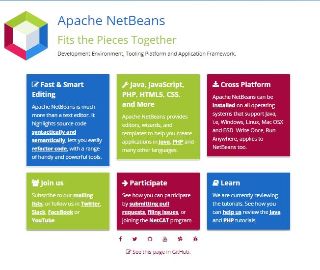

2.1.- NetBeans.
Caso práctico

Juan está deseando de aprender a utilizar los distintos IDE. Para ello ha visto, que para algunos de ellos, va a necesitar tener instalada la JDK de Java (véase anexo I).
Una vez la tiene instalada ha llegado el momento de comenzar a trabajar con los distintos IDE.
—Uff, me ha costado un poco… —le comenta a Ana. —Hace tiempo que no trabajaba en la terminal de Linux y se me habían olvidado algunas órdenes básicas. Ana le comenta que ya tiene el equipo preparado para instalar NetBeans. Decide pasarle los apuntes del ciclo a distancia para que Juan no tenga que perder mucho tiempo buscando los comandos necesarios.
Netbeans es un entorno de desarrollo integrado libre desarrollado principalmente para el lenguaje de programación Java, aunque existe numerosos módulos que permiten desarrollar en otros lenguajes de programación como PHP.
NetBeans fue desarrollado por Sun MicroSystems y tras la adquisición de esta empresa por Oracle Corporation, pasó a ser propiedad de Oracle que es la empresa encargada de su mantenimiento.
El NetBeans IDE soporta el desarrollo de todos los tipos de aplicación Java (J2SE, web, EJB y aplicaciones móviles). Además permite aumentar su funcionalidad mediante la instalación de módulos. Entre dichos módulos podríamos destacar las herramientas para la generación de esquemas XML, el modelado UML o los plugin que dan soporte a otros lenguajes de programación como PHP o C++.
Podemos descargarnos Netbeans desde la página oficial del proyecto.
